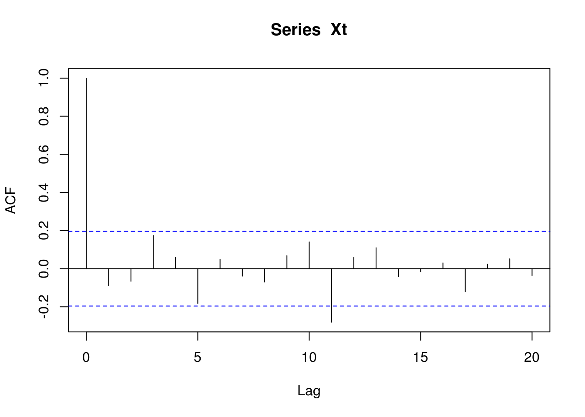
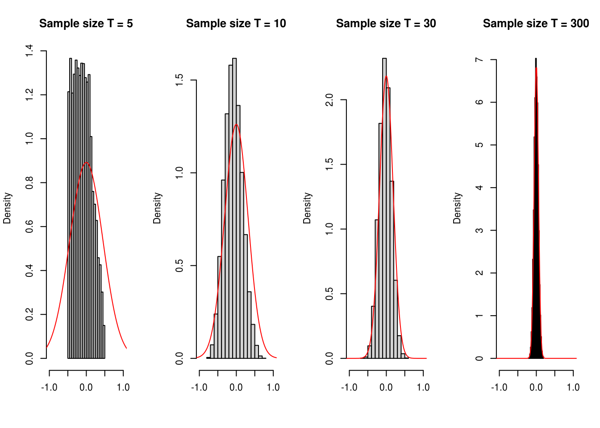

Chapter 3 Autocorrelation and Stationarity
After reading this chapter you will be able to:
- Describe independent and dependent data
- Interpret a processes ACF and CCF.
- Understand the notion of stationarity.
- Differentiate between Strong and Weak stationarity.
- Judge whether a process is stationary.
3.1 Dependency
Generally speaking, there is a dependence that within the sequence of random variables.
Recall the difference between independent and dependent data:
Definition: Independence
\(X_1, X_2, \ldots, X_T\) are independent and identically distributed if and only if
\begin{equation} P\left(X_1 \le x_1, X_2 \le x_2,\ldots, X_{T} \le x_T \right) = P\left(X_1 \le x_1\right) P\left(X_2 \le x_2\right) \cdots P\left(X_{T} \le x_T \right) \label{eq:independent} \end{equation}for any \(T \ge 2\) and \(x_1, \ldots, x_T \in \mathbb{R}\).
Definition: Dependence
\(X_1, X_2, \ldots, X_T\) are identically distributed but dependent, then
\begin{equation} \left| {P\left( {{X_1} < {x_1},{X_2} < {x_2}, \ldots ,{X_T} < {x_T}} \right) - P\left( {{X_1} < {x_1}} \right)P\left( {{X_2} < {x_2}} \right) \cdots P\left( {{X_T} < {x_T}} \right)} \right| \ne 0 \label{eq:dependent} \end{equation}for some \(x_1, \ldots, x_T \in \mathbb{R}\).
3.1.1 Measuring (Linear) Dependence
There are many forms of dependency…

dependency
However, the methods, covariance and correlation, that we will be using are specific to measuring linear dependence. As a result, these tools are less helpful to measure monotonic dependence and they are much less helpful to measure nonlinearly dependence.
3.2 The Autocorrelation and Autocovariance Functions
Dependence between \(T\) different RV is difficult to measure in one shot! So we consider just two random variables, \(X_t\) and \(X_{t+h}\). Then one (linear) measure of dependence is the covariance between \(\left(X_t , X_{t+h}\right)\). Since \(X\) is the same RV observed at two different time points, the covariance between \(X_t\) and \(X_{t+h}\) is defined as the Autocovariance.
3.2.1 Definitions
The Autocovariance Function of a series \(X_t\) is defined as
\[{\gamma _x}\left( {t,t+h} \right) = \operatorname{cov} \left( {{x_t},{x_{t+h}}} \right).\]
Since we generally consider stochastic processes with constant zero mean we often have
\[{\gamma _x}\left( {t,t+h} \right) = E\left[X_t X_{t+h} \right]. \]
We normally drop the subscript referring to the time series if it is clear to the time series the autocovariance function is referencing. For example, we generally use \({\gamma}\left( {t,t+h} \right)\) instead of \({\gamma _x}\left( {t,t+h} \right)\). Moreover, the notation is even further simplify when the covariance of \(X_t\) and \(X_{t+h}\) is the same as that of \(X_{t+j}\) and \(X_{t+h+j}\) (for \(j \in \mathbb{Z}\)), i.e. that the covariance depends only on the time between observations and not the absolute date \(t\). This is an important property call stationarity, which will be discuss in the next section. In this case, we simply use to following notation: \[\gamma \left( {h} \right) = \operatorname{cov} \left( X_t , X_{t+h} \right). \]
A few other remarks:
- The covariance function is symmetric. That is, \({\gamma}\left( {h} \right) = {\gamma}\left( -h \right)\) since \(\operatorname{cov} \left( {{X_t},{X_{t+h}}} \right) = \operatorname{cov} \left( X_{t+h},X_{t} \right)\).
- Note that \(\operatorname{var} \left( X_{t} \right) = {\gamma}\left( 0 \right)\).
- We have that \(|\gamma(h)| \leq \gamma(0)\) for all \(h\). The proof of this inequality follows from Cauchy-Schwarz inequality, i.e. \[ \begin{aligned} \left(|\gamma(h)| \right)^2 &= \gamma(h)^2 = \left(E\left[\left(X_t - E[X_t] \right)\left(X_{t+h} - E[X_{t+h}] \right)\right]\right)^2\\ &\leq E\left[\left(X_t - E[X_t] \right)^2 \right] E\left[\left(X_{t+h} - E[X_{t+h}] \right)^2 \right] = \gamma(0)^2. \end{aligned} \]
- Just as any covariance, the \({\gamma}\left( {h} \right)\) is “scale dependent”, \({\gamma}\left( {h} \right) \in \mathbb{R}\), or \(-\infty \le {\gamma}\left( {h} \right) \le +\infty\)
- If \(\left| {\gamma}\left( {h} \right) \right|\) is “close” to 0, then they are “less dependent”.
- If \(\left| {\gamma}\left( {h} \right) \right|\) is “far” from 0, \(X_t\) and \(X_{t+h}\) are “more dependent”.
- \({\gamma}\left( {h} \right)=0\) does not imply \(X_t\) and \(X_{t+h}\) are independent. This is only true in joint Gaussian case.
An important related statistic is the correlation of \(X_t\) with \(X_{t+h}\) or autocorrelation which is defined (for stationary processes) as
\[\rho \left( h \right) = \operatorname{corr}\left( {{X_t},{X_{t + h}}} \right) = \frac{\gamma(h) }{\gamma(0)}.\]
It is important to note that the above notation implies that the autocorrelation function is only a function of the lag \(h\) between observations. Thus, autocovariances and autocorrelations are one possible way to describe the joint distribution of a time series. Indeed, the correlation of \(X_t\) with \(X_{t+1}\) is an obvious measure of how persistent a time series is.
Remeber that just as with any correlation:
- \(\rho \left( h \right)\) is scale free.
- \(\rho \left( {{X_t},{X_{t + h}}} \right)\) is closer to \(\pm 1 \Rightarrow \left({ X_t, X_{t+h} } \right)\) “more dependent.”
- \(|\rho \left( h \right)| \leq 1\) since \(|\gamma(h)| \leq \gamma(0)\).
- Causation and correlation are two very different things!
3.2.2 A Fundamental Representation
Autocovariances and autocorrelation also turn out to be a very useful tool because they are one of fundamental representations of time series. Indeed, if we consider a zero mean normally distrbuted process it is clear that its joint distribution is fully characterized by the autocariances \(E[X_t X_{t+h}]\) (since the joint probability density only depends of these covariances). Once we know the autocovariances we know everything there is to know about the process and therefore:
If two processes have the same autocovariance function, then they are the same process.
3.2.3 Admissible autocorrelation functions
Since the autocorrelation is related to a fundamental representation of time series it implies that one might be able to define a stochastic process by picking a set autocorrelation values. However, it turns out not every collection of numbers such as \(\{\rho_1, \rho_2, ...\}\) is the autocorrelation of a process. Two conditions are required to ensure the validity of an autocorrelation sequence:
- \(\operatorname{max}_j \; | \rho_j| \leq 1\).
- \(\operatorname{var} \left[\sum_{j = 0}^\infty \alpha_j X_{t-j} \right] \geq 0\) for all \(\{\alpha_0, \alpha_1, ...\}\).
The first condition is obvious and simply relects the fact that \(|\rho \left( h \right)| \leq 1\) but the second is more difficult to verify. Let \(\alpha_j = 0, \; j > 1\), then conditon 2 implies that
\[\operatorname{var} \left[ \alpha_0 X_{t} + \alpha_1 X_{t-1} \right] = \gamma_0 \begin{bmatrix} \alpha_0 & \alpha_1 \end{bmatrix} \begin{bmatrix} 1 & \rho_1\\ \rho_1 & 1 \end{bmatrix} \begin{bmatrix} \alpha_0 \\ \alpha_1 \end{bmatrix} \geq 0. \]
Thus, the matrix
\[ \boldsymbol{A}_1 = \begin{bmatrix} 1 & \rho_1\\ \rho_1 & 1 \end{bmatrix} \]
must be positive semi-definite. Therefore,
\[\operatorname{det} \left(\boldsymbol{A}_1\right) = 1 - \rho_1^2 \]
implying that \(|\rho_1| < 1\). Next, let \(\alpha_j = 0, \; j > 2\), then we must verify that:
\[\operatorname{var} \left[ \alpha_0 X_{t} + \alpha_1 X_{t-1} + \alpha_2 X_{t-2} \right] = \gamma_0 \begin{bmatrix} \alpha_0 & \alpha_1 &\alpha_2 \end{bmatrix} \begin{bmatrix} 1 & \rho_1 & \rho_2\\ \rho_1 & 1 & \rho_1 \\ \rho_2 & \rho_1 & 1 \end{bmatrix} \begin{bmatrix} \alpha_0 \\ \alpha_1 \\ \alpha_2 \end{bmatrix} \geq 0. \]
Similarly, this implies that the matrix
\[ \boldsymbol{A}_2 = \begin{bmatrix} 1 & \rho_1 & \rho_2\\ \rho_1 & 1 & \rho_1 \\ \rho_2 & \rho_1 & 1 \end{bmatrix} \]
must be positive semi-definite. It is easy to verify that
\[\operatorname{det} \left(\boldsymbol{A}_2\right) = \left(1 - \rho_2 \right)\left(- 2 \rho_1^2 + \rho_2 + 1\right). \]
It implies that \(|\rho_2| < 1\) as well as
\[\begin{aligned} &- 2 \rho_1^2 + \rho_2 + 1 \geq 0 \Rightarrow 1 > \rho_2 \geq 2 \rho_1^2 - 1 \\ &\Rightarrow 1 - \rho_1^2 > \rho_2 - \rho_1^2 \geq -(1 - \rho_1^2)\\ &\Rightarrow 1 > \frac{\rho_2 - \rho_1^2 }{1 - \rho_1^2} \geq 1, \end{aligned}\]
imlying that \(\rho_1\) and \(\rho_2\) must lie in a parabolic shaped region defined by the above inequalities. Therefore, the restrictions on the autocorrelation are very complicated providing a motivation for other form of fundamental representation.
3.3 Stationarity
3.3.1 Definitions
There are two kinds of stationarity which are commonly used. They are defined below:
- A process \(\{X_t\}\) is strongly stationary or strictly stationary if the joint probability distribution of \(\{X_{t-h}, ..., X_t, ..., X_{t+h}\}\) is independent of \(t\) for all \(h\).
- A process \(\{X_t\}\) is weakly stationary, covariance stationary or second order stationary if \(E[X_t]\), \(E[X_t^2]\) are finite and \(E[X_t X_{t-h}]\) depends only on \(h\) and not on \(t\).
These types of stationarity are not equivalent and the presence of one kind of stationarity does not imply the other. That is, a time series can be strongly stationary but not weakly stationary and vice versa. In some cases, a time series can be both strong and weakly stationary, this is happends for example in the (joint) Gaussian case. Stationarity of \(X_t\) matters, because it provides the framework in which averaging dependent data makes sense.
A few remarks:
- Strong stationarity \(\notimplies\) weak stationarity. Example: an iid Cauchy process is strongly but not weakly stationary.
- Weak stationarity \(\notimplies\) strong stationarity. Example: \(X_{2t} = U_{2t}, X_{2t+1} = V_{2t+1} \forall t\) where \({U_t}\mathop \sim \limits^{iid} N\left( {1,1} \right)\) and \({V_t}\mathop \sim \limits^{iid} Exponential\left( 1 \right)\) is weakly stationary but NOT strongly stationary.
- Strong stationarity + \(E[X_t]\), \(E[X_t^2] < \infty\) \(\implies\) weak stationarity
- Weak stationarity + normality \(\implies\) strong stationarity.
3.3.2 Assessing Weak Stationarity of Time Series Models
In order to verify if a process is weakly stationary, we must make sure the process satisfies:
- \(E\left[X_t \right] = \mu_t = \mu < \infty\),
- \(\operatorname{var}\left[X_t \right] = \sigma^2_t = \sigma^2 < \infty\),
- \(\operatorname{cov}\left(X_t, X_{t+h} \right) = \gamma \left(h\right)\).
3.3.2.1 Example: Gaussian White Noise
It is easy to verify that a Gaussian white noise is stationary. Indeed, we have:
- \(E\left[ {{X_t}} \right] = 0\),
- \(\gamma(0) = \sigma^2 < \infty\),
- \(\gamma(h) = 0\) for \(|h| > 0\).
3.3.2.2 Example: Random Walk
To evaluate the stationarity of a random walk we first derive its properties:
- \[\begin{aligned} E\left[ {{X_t}} \right] &= E\left[ {{X_{t - 1}} + {W_t}} \right] = E\left[ {\sum\limits_{i = 1}^t {{W_t}} + {X_0}} \right] \\ &= E\left[ {\sum\limits_{i = 1}^t {{W_t}} } \right] + {X_0} = X_0 \\ \end{aligned} \] Note, the mean here is constant since it depends only on the value of the first term in the sequence.
- \[\begin{aligned} \operatorname{var}\left( {{X_t}} \right) &= \operatorname{var}\left( {\sum\limits_{i = 1}^t {{W_t}} + {X_0}} \right) = \operatorname{var}\left( {\sum\limits_{i = 1}^t {{w_t}} } \right) + \underbrace {\operatorname{var}\left( {{X_0}} \right)}_{= 0} \\ &= \sum\limits_{i = 1}^t {Var\left( {{w_t}} \right)} = t \sigma_w^2. \end{aligned}\] where \(\sigma_w^2 = \operatorname{var}(W_t)\). Therefore, the variance has a dependence on time and we have: \[\mathop {\lim }\limits_{t \to \infty } \; \operatorname{var}\left(X_t\right) = \infty.\] As a result, the process is not weakly stationary.
Continuing on just to obtain the covariance, we have: \[\begin{aligned} \gamma \left( h \right) &= Cov\left( {{y_t},{y_{t + h}}} \right) = Cov\left( {\sum\limits_{i = 1}^t {{w_i}} ,\sum\limits_{j = 1}^{t + h} {{w_j}} } \right) \\ &= Cov\left( {\sum\limits_{i = 1}^t {{w_i}} ,\sum\limits_{j = 1}^t {{w_j}} } \right) = \min \left( {t,t + h} \right)\sigma _w^2 \\ &= \left( {t + \min \left( {0,h} \right)} \right)\sigma _w^2, \end{aligned} \]
which also illustrates that non-stationarity of a random walk.
In the following simulated example, we illustrate the non-stationary feature of such process:
# In this example, we simulate a large number of random walks
# Number of simulated processes
B = 200
# Length of random walks
n = 1000
# Output matrix
out = matrix(NA,B,n)
for (i in 1:B){
# Simulate random walk
Xt = cumsum(rnorm(n))
# Store process
out[i,] = Xt
}
# Plot random walks
plot(NA, xlim = c(1,n), ylim = range(out), xlab = "Time", ylab = " ")
color = sample(topo.colors(B, alpha = 0.5))
for (i in 1:B){
lines(out[i,], col = color[i])
}
# Add 95% confidence region
lines(1:n, 1.96*sqrt(1:n), col = 2, lwd = 2, lty = 2)
lines(1:n, -1.96*sqrt(1:n), col = 2, lwd = 2, lty = 2)
The relationship between time and variance can clearly be observed in the above graph.
3.3.2.3 Example: MA(1)
To evaluate the stationarity of an MA(1) process we first derive its properties:
- \[\begin{aligned} E\left[ {{y_t}} \right] &= E\left[ {{\theta _1}{w_{t - 1}} + {w_t}} \right] \\ &= {\theta _1}E\left[ {{w_{t - 1}}} \right] + E\left[ {{w_t}} \right] = 0 \\ \end{aligned}\]
- \[\begin{aligned} Cov\left( {{y_t},{y_{t + h}}} \right) &= E\left[ {\left( {{y_t} - E\left[ {{y_t}} \right]} \right)\left( {{y_{t + h}} - E\left[ {{y_{t + h}}} \right]} \right)} \right] \\ &= E\left[ {{y_t}{y_{t + h}}} \right] - \underbrace {E\left[ {{y_t}} \right]}_{ = 0}\underbrace {E\left[ {{y_{t + h}}} \right]}_{ = 0} \\ &= E\left[ {\left( {{\theta _1}{w_{t - 1}} + {w_t}} \right)\left( {{\theta _1}{w_{t + h - 1}} + {w_{t + h}}} \right)} \right] \\ &= E\left[ {\theta _1^2{w_{t - 1}}{w_{t + h - 1}} + \theta {w_t}{w_{t + h}} + {\theta _1}{w_{t - 1}}{w_{t + h}} + {w_t}{w_{t + h}}} \right] \\ &\\ E\left[ {{w_t}{w_{t + h}}} \right] &= \operatorname{cov} \left( {{w_t},{w_{t + h}}} \right) + E\left[ {{w_t}} \right]E\left[ {{w_{t + h}}} \right] = {1_{\left\{ {h = 0} \right\}}}\sigma _w^2 \\ \\ &\Rightarrow Cov\left( {{y_t},{y_{t + h}}} \right) = \left( {\theta _1^2{1_{\left\{ {h = 0} \right\}}} + {\theta _1}{1_{\left\{ {h = 1} \right\}}} + {\theta _1}{1_{\left\{ {h = - 1} \right\}}} + {1_{\left\{ {h = 0} \right\}}}} \right)\sigma _w^2 \\ \gamma \left( h \right) &= \left\{ {\begin{array}{*{20}{c}} {\left( {\theta _1^2 + 1} \right)\sigma _w^2}&{h = 0} \\ {{\theta _1}\sigma _w^2}&{\left| h \right| = 1} \\ 0&{\left| h \right| > 1} \end{array}} \right. \end{aligned} \]
Therefore, an MA(1) process is weakly stationary since both the mean and variance are constant over time. In addition, we can easily obtain the autocorrelation function which is given by
\[\Rightarrow \rho \left( h \right) = \left\{ {\begin{array}{*{20}{c}} 1&{h = 0} \\ {\frac{{{\theta _1}\sigma _w^2}}{{\left( {\theta _1^2 + 1} \right)\sigma _w^2}} = \frac{{{\theta _1}}}{{\theta _1^2 + 1}}}&{\left| h \right| = 1} \\ 0&{\left| h \right| > 1} \end{array}} \right.\]
Interestingly, we can note that \(|\rho(1)| \leq 0.5\).
3.3.2.4 Example: MA(1)
Consider the AR(1) process given as: \[{y_t} = {\phi _1}{y_{t - 1}} + {w_t} \text{, where } {w_t}\mathop \sim \limits^{iid} WN\left( {0,\sigma _w^2} \right)\]
This process was shown to simplify to:
\[y_t = {\phi ^t}{y_0} + \sum\limits_{i = 0}^{t - 1} {\phi _1^i{w_{t - i}}}\]
In addition, we add the requirement that \(\left| \phi _1 \right| < 1\). This requirement allows for the process to be stationary. If \(\phi _1 \ge 1\), the process would not converge. This way the process will be able to be written as a geometric series that converges: \[\sum\limits_{k = 0}^\infty {{r^k}} = \frac{1}{{1 - r}},{\text{ }}\left| r \right| < 1\]
Next, we demonstrate how crucial this property is:
\[\begin{aligned} \mathop {\lim }\limits_{t \to \infty } E\left[ {{y_t}} \right] &= \mathop {\lim }\limits_{t \to \infty } E\left[ {{\phi ^t}{y_0} + \sum\limits_{i = 0}^{t - 1} {\phi _1^i{w_{t - i}}} } \right] \\ &= \mathop {\lim }\limits_{t \to \infty } \underbrace {{\phi ^t}{y_0}}_{\left| \phi \right| < 1 \Rightarrow t \to \infty {\text{ = 0}}} + \sum\limits_{i = 0}^{t - 1} {\phi _1^i\underbrace {E\left[ {{w_{t - i}}} \right]}_{ = 0}} \\ &= 0 \\ \mathop {\lim }\limits_{t \to \infty } Var\left( {{y_t}} \right) &= \mathop {\lim }\limits_{t \to \infty } Var\left( {{\phi ^t}{y_0} + \sum\limits_{i = 0}^{t - 1} {\phi _1^i{w_{t - i}}} } \right) \\ &= \mathop {\lim }\limits_{t \to \infty } \underbrace {Var\left( {{\phi ^t}{y_0}} \right)}_{ = 0{\text{ since constant}}} + Var\left( {\sum\limits_{i = 0}^{t - 1} {\phi _1^i{w_{t - i}}} } \right) \\ &= \mathop {\lim }\limits_{t \to \infty } \sum\limits_{i = 0}^{t - 1} {\phi _1^{2i}Var\left( {{w_{t - i}}} \right)} \\ &= \mathop {\lim }\limits_{t \to \infty } \sigma _w^2\sum\limits_{i = 0}^{t - 1} {\phi _1^{2i}} \\ &= \sigma _w^2 \cdot \underbrace {\frac{1}{{1 - {\phi ^2}}}}_{\begin{subarray}{l} {\text{Geometric Series}} \end{subarray}} \end{aligned} \]
This leads us to being able to conclude the autocovariance function is: \[\begin{aligned} Cov\left( {{y_t},{y_{t + h}}} \right) &= Cov\left( {{y_t},\phi {y_{t + h - 1}} + {w_{t + h}}} \right) \\ &= Cov\left( {{y_t},\phi {y_{t + h - 1}}} \right) \\ &= Cov\left( {{y_t},{\phi ^{\left| h \right|}}{y_t}} \right) \\ &= {\phi ^{\left| h \right|}}Cov\left( {{y_t},{y_t}} \right) \\ &= {\phi ^{\left| h \right|}}Var\left( {{y_t}} \right) \\ &= {\phi ^{\left| h \right|}}\frac{{\sigma _w^2}}{{1 - \phi _1^2}} \\ \end{aligned} \]
Both the mean and autocovariance function do not depend on time and, thus, the AR(1) process is stationary if \(\left| \phi _1 \right| < 1\).
If we assume that the AR(1) process is stationary, we can derive the mean and variance in another way. Without a loss of generality, we’ll assume \(y_0 = 0\).
Therefore:
\[\begin{aligned} {y_t} &= {\phi _t}{y_{t - 1}} + {w_t} \\ &= {\phi _1}\left( {{\phi _1}{y_{t - 2}} + {w_{t - 1}}} \right) + {w_t} \\ &= \phi _1^2{y_{t - 2}} + {\phi _1}{w_{t - 1}} + {w_t} \\ &\vdots \\ &= \sum\limits_{i = 0}^{t - 1} {\phi _1^i{w_{t - i}}} \\ & \\ E\left[ {{y_t}} \right] &= E\left[ {\sum\limits_{i = 0}^{t - 1} {\phi _1^i{w_{t - i}}} } \right] \\ &= \sum\limits_{i = 0}^{t - 1} {\phi _1^i\underbrace {E\left[ {{w_{t - i}}} \right]}_{ = 0}} \\ &= 0 \\ &\\ Var\left( {{y_t}} \right) &= E\left[ {{{\left( {{y_t} - E\left[ {{y_t}} \right]} \right)}^2}} \right] \\ &= E\left[ {y_t^2} \right] - {\left( {E\left[ {{y_t}} \right]} \right)^2} \\ &= E\left[ {y_t^2} \right] \\ &= E\left[ {{{\left( {{\phi _1}{y_{t - 1}} + {w_t}} \right)}^2}} \right] \\ &= E\left[ {\phi _1^2y_{t - 1}^2 + w_t^2 + 2{\phi _1}{y_t}{w_t}} \right] \\ &= \phi _1^2E\left[ {y_{t - 1}^2} \right] + \underbrace {E\left[ {w_t^2} \right]}_{ = \sigma _w^2} + 2{\phi _1}\underbrace {E\left[ {{y_t}} \right]}_{ = 0}\underbrace {E\left[ {{w_t}} \right]}_{ = 0} \\ &= \underbrace {\phi _1^2Var\left( {{y_{t - 1}}} \right) + \sigma _w^2 = \phi _1^2Var\left( {{y_t}} \right) + \sigma _w^2}_{{\text{Assume stationarity}}} \\ Var\left( {{y_t}} \right) &= \phi _1^2Var\left( {{y_t}} \right) + \sigma _w^2 \\ Var\left( {{y_t}} \right) - \phi _1^2Var\left( {{y_t}} \right) &= \sigma _w^2 \\ Var\left( {{y_t}} \right)\left( {1 - \phi _1^2} \right) &= \sigma _w^2 \\ Var\left( {{y_t}} \right) &= \frac{{\sigma _w^2}}{{1 - \phi _1^2}} \\ \end{aligned} \]
3.3.3 Esimtation of the Mean Function
If a time series is stationary, the mean function is constant and a possible estimator of this quantity is given by
\[\bar{X} = {\frac{1}{n}\sum\limits_{t = 1}^n {{X_t}} }.\]
This estimator is clearly unbiased and has the following variance:
\[\begin{aligned} \operatorname{var} \left( {\bar X} \right) &= \operatorname{var} \left( {\frac{1}{n}\sum\limits_{t = 1}^n {{X_t}} } \right) \\ &= \frac{1}{{{n^2}}}\operatorname{var} \left( {{{\left[ {\begin{array}{*{20}{c}} 1& \cdots &1 \end{array}} \right]}_{1 \times n}}{{\left[ {\begin{array}{*{20}{c}} {{X_1}} \\ \vdots \\ {{X_n}} \end{array}} \right]}_{n \times 1}}} \right) \\ &= \frac{1}{{{n^2}}}{\left[ {\begin{array}{*{20}{c}} 1& \cdots &1 \end{array}} \right]_{1 \times n}}\left[ {\begin{array}{*{20}{c}} {\gamma \left( 0 \right)}&{\gamma \left( 1 \right)}& \cdots &{\gamma \left( {n - 1} \right)} \\ {\gamma \left( 1 \right)}&{\gamma \left( 0 \right)}&{}& \vdots \\ \vdots &{}& \ddots & \vdots \\ {\gamma \left( {n - 1} \right)}& \cdots & \cdots &{\gamma \left( 0 \right)} \end{array}} \right]{\left[ {\begin{array}{*{20}{c}} 1 \\ \vdots \\ 1 \end{array}} \right]_{n \times 1}} \\ &= \frac{1}{{{n^2}}}\left( {n\gamma \left( 0 \right) + 2\left( {n - 1} \right)\gamma \left( 1 \right) + 2\left( {n - 2} \right)\gamma \left( 2 \right) + \cdots + 2\gamma \left( {n - 1} \right)} \right) \\ &= \frac{1}{n}\sum\limits_{h = - n}^n {\left( {1 - \frac{{\left| h \right|}}{n}} \right)\gamma \left( h \right)} \\ \end{aligned}. \]
In the white noise case, the above formula reduces to the usual \(\operatorname{var} \left( {\bar X} \right) = \operatorname{var}(X_t)/n\).
3.3.4 Sample Autocovariance and Autocorrelation Functions
A natural estimator of the autocovariance function is given as:
\[\hat \gamma \left( h \right) = \frac{1}{T}\sum\limits_{t = 1}^{T - h} {\left( {{X_t} - \bar X} \right)\left( {{X_{t + h}} - \bar X} \right)} \]
leading the following “plug-in” estimator of the autocorrelation function
\[\hat \rho \left( h \right) = \frac{{\hat \gamma \left( h \right)}}{{\hat \gamma \left( 0 \right)}}.\]
A graphical representation of the autocorrelation function is often the first step of any time series analysis (assuming the process to be stationary). Consider the following simulated example:
# Simulate iid gaussian RV (i.e. white noise)
Xt = rnorm(100)
# Compute autocorrelation
acf_Xt = acf(Xt)
# Plot autocorrelation
plot(acf_Xt)
In this example, the true autocorrelation at lag \(h\) (\(|h|\) > 0 ) is equal 0 but obviously the estimated autocorrelations are random variables and are not equal to their true value. It would therefore be usefull to have have some knowledge about the variability of the sample autocorrelations (under some conditions) to assess whether the data comes from a completely random series or presents some significant correlation at some lags. The following result provide an asymptotic solution to this problem:
If \(X_t\) is white noise with finite fourth moment, then \(\hat{\rho}(h)\) is approximately normally distributed with mean \(0\) and variance \(T^{-1}\) for all fixed \(h\).
Using on this result, we now have an approximate method to assess whether peaks in sample autocorrelation are significant by determining whether the observed peak lies outside the interval \(+/- 2/\sqrt{T}\) (i.e. an approximate 95% confidence interval). Returning to our previous example:
# Plot autocorrelation with confidence bands
plot(acf_Xt)
It can now be observed that most peaks lies within the interval \(+/- 2/\sqrt{T}\) suggesting that the true data generating process is completely random (in the linear sense).
Unfortunately, this method is asymptotic (it relies on the central limit theorem) and there no “exact” tools that can be used in this case. In the simulation study below consider the “quality” of this result for \(h = 3\) considering different sample sizes:
# Number of Monte Carlo replications
B = 10000
# Define considered lag
h = 3
# Sample size considered
T = c(5,10,30,300)
# Initialisation
result = matrix(NA,B,length(T))
# Set seed
set.seed(1)
# Start Monte Carlo
for (i in 1:B){
for (j in 1:length(T)){
# Simluate process
Xt = rnorm(T[j])
# Save autocorrelation at lag h
result[i,j] = acf(Xt, plot = FALSE)$acf[h+1]
}
}
# Plot results
par(mfrow = c(1,length(T)))
for (i in 1:length(T)){
# Estimated empirical distribution
hist(result[,i], col = "lightgrey", main = paste("Sample size T =",T[i]), probability = TRUE, xlim = c(-1,1), xlab = " ")
# Asymptotic distribution
xx = seq(from = -10, to = 10, length.out = 10^3)
yy = dnorm(xx,0,1/sqrt(T[i]))
lines(xx,yy, col = "red")
}
It can clearly be observed that asymptotic approximation is quite poor when \(T = 5\) but as the sample size increases the approximation becomes more appropriate and is nearly perfect with \(T = 300\).
3.4 Joint Stationarity
Two time series, say \(\left(X_t \right)\) and \(\left(Y_t\right)\), are said to be jointly stationary if they are each stationary, and the cross-covariance function
\[{\gamma _{XY}}\left( {t,t + h} \right) = Cov\left( {{X_t},{Y_{t + h}}} \right) = {\gamma _{XY}}\left( h \right)\]
is a function only of lag \(h\).
The cross-correlation function for jointly stationary times can be expressed as:
\[{\rho _{XY}}\left( {t,t + h} \right) = \frac{{{\gamma _{XY}}\left( {t,t + h} \right)}}{{{\sigma _{{X_t}}}{\sigma _{{Y_{t + h}}}}}} = \frac{{{\gamma _{XY}}\left( h \right)}}{{{\sigma _{{X_t}}}{\sigma _{{Y_{t + h}}}}}} = {\rho _{XY}}\left( h \right)\]